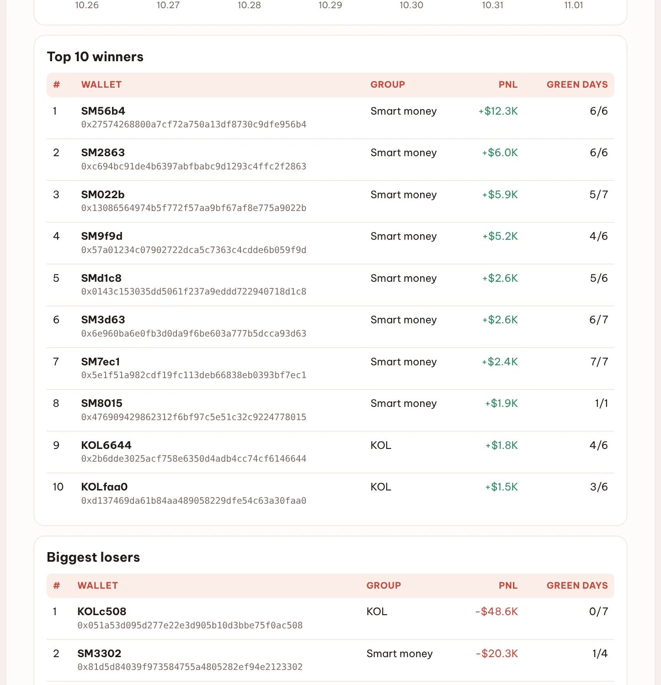
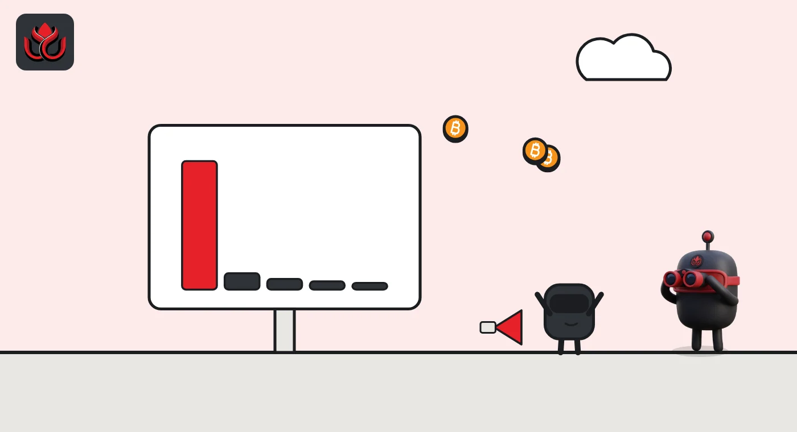

Only 29 of 59 tracked BSC wallets made money last week. Smart money won, influencers lost
DeepSea's weekly data shows BSC smart money wallets finished $7,800 up while eight tracked KOLs lost $55,400. One influencer wallet had no green day in seven.
Key points
- DeepSea counted 59 BSC wallets with closed trades from October 26 to November 1, 2026. Together they lost $49,400; 29 ended in profit.
- The 50 smart money wallets made $7,800 net. The top one, SM56b4, made $12,300 and was green on all six trading days.
- The eight tracked KOLs lost $55,400. One wallet, KOLc508, lost $48,600 and had zero green days.
 What DeepSea's data shows
What DeepSea's data shows
DeepSea's weekly report tracks realized profit and loss, meaning only trades that were actually closed. On BSC (BNB Smart Chain) it found 59 wallets with closed trades last week. They lost $49,400 in total, and 29 of them (49%) finished in profit.
The split by group tells the story. The 50 smart money wallets (wallets with a strong past trading record) made $7,800, with 26 up and 24 down. The 8 KOL wallets (key opinion leaders, crypto influencers) lost $55,400, with 3 up and 5 down. One shark wallet lost $1,800. Only one day, October 30, ended green, and only by $490. The worst day was October 29, at minus $17,900.

Data: DeepSea (desea.io), checked November 4, 2026, 12:37 a.m. ET.
The winners
The top BSC wallet was the one DeepSea labels SM56b4, up $12,300 and green on six of six trading days. Next came SM2863 at $6,000 (six of six) and SM022b at $5,900 (five of seven). SM7ec1 made a smaller $2,400 but was green all seven days. The best KOLs, KOL6644 and KOLfaa0, made only $1,800 and $1,500.
Best and worst tracked BSC wallets, October 26 to November 1
US$ thousand
Source: DeepSea weekly report, October 26 to November 1, 2026.
The losers
Almost all of the KOL loss came from one wallet. KOLc508 lost $48,600 and did not have a single green day in seven. That is about 88% of the KOL group's $55,400 loss. Among smart money, SM3302 lost $20,300 and SM0161 lost $9,900 with no green days in six.

Wallets to watch across chains
DeepSea also ranks its best smart money and shark wallets across Solana and BSC. Four of the top ten are on BSC. The leader is on Solana: SMkba2, up $14,900 on two trading days, both green. SM56b4 is second. Solana wallets SMic4B ($9,800), SMWXLX ($8,300) and SM25Tk ($7,900) follow, with the shark wallet SharkoKSM at $6,800.
These are small sums next to Solana's tracked smart money, which lost $2.10 million that week, mostly from one wallet. DeepSea does not show what tokens these BSC winners traded, so their strategy is unknown.
Why it matters
Copy trading, or following the trades of famous wallets, is popular. This week's numbers show why it is risky: half the tracked BSC wallets lost money, and the influencer group did worse than the quieter smart money wallets. Past results do not promise future ones.
LC Insight analysis
This section is our reading of the facts above, not a statement of fact.
- We think the steady wallets are more interesting than the big ones. SM56b4 and SM7ec1 had no red days, a steadier record than one large win.
- The KOL result looks driven by one bad wallet, not the whole group. With only eight KOLs tracked on BSC, one trader can swing the total.
- The BSC sums are small. The best wallet made $12,300 in a week, while Solana's tracked smart money lost $2.10 million, so BSC is a side stage in this report.
What's next
- Whether SM56b4 and SM2863 keep their perfect green-day records next week
- Whether KOLc508 keeps trading after a full red week
- How many BSC wallets DeepSea tracks as coverage grows
Disclaimer. This article is based on public information and the sources listed below as of the update time shown. It is for information only and is not investment, legal or tax advice. Figures may change as companies and authorities publish new data.